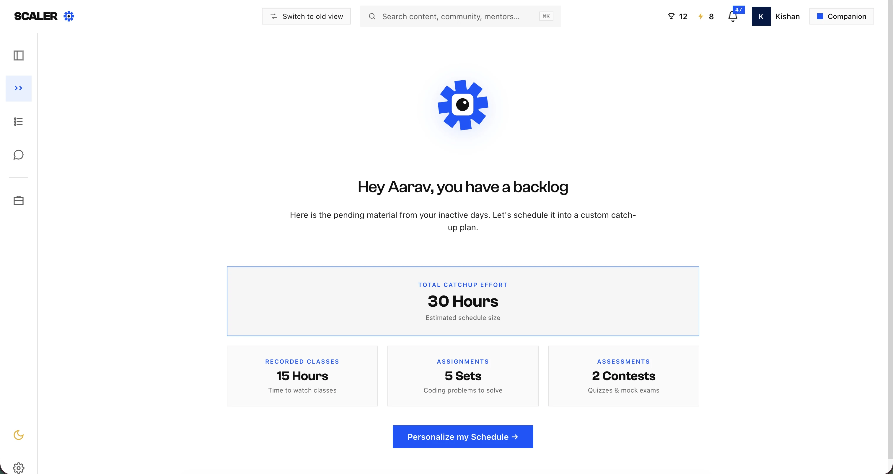
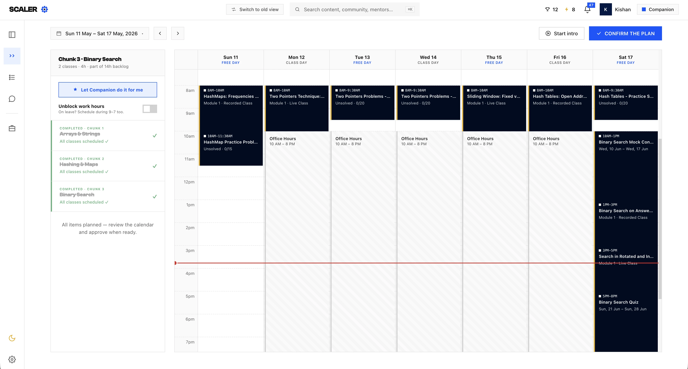

PATH MAKER X SCALER LMS
Designing the Catch-up Plan for learners falling behind.
A calendar-based backlog planner that turns scattered pending classes, assignments, pre-reads, and contests into a visible, scheduled, achievable weekly plan before the backlog becomes a pause-or-reset crisis.

Overview
Backlog needed to become visible while it was still small enough to clear.
The Catch-up Plan turns a learner's scattered, invisible backlog into one honest view: what they are behind on, how much effort it will take, and when that work can realistically fit into their week.
The core insight shaped the whole flow: learners did not have a surface that said, "you are missing these items, and here is the plan to finish them before they pile up." Without early visibility, backlog quietly grows into a course pause or reset conversation.
The Problem
Learners sensed they were behind, but could not see the shape of the debt.
Pending work lived where it originated: missed classes in class lists, assignments in class tabs, pre-reads inside classroom screens, and contests as status flags. The learner could feel the pressure, but the product never translated it into a countable recovery problem.
Early invisible stage
A learner misses one or two classes, but nothing surfaces it as debt. The backlog exists, but there is no prompt to act while it is still manageable.
Silent growth stage
Items keep piling up. The learner half-knows, avoids looking, and drifts into the silent-quitter pattern: formless dread with no handle on it.
Late crisis stage
Once the backlog is too large to clear alongside live classes, the realistic exits become a course pause or reset.
The Pivot
The first Kanban approach showed the pile, but it did not create a path through it.
The first design was a three-column Kanban board: Blocking, Pending, and Done. It was honest and exhaustive, but backwards-looking. It answered "what did I miss?" only after the learner was already behind.
The calendar Plan Maker reversed that decision. Time estimates moved from absent to central. The surface stopped reflecting debt and started planning it away by placing catch-up work into upcoming free time.
Kanban limitation
No sense of scale. Countable cards still did not tell the learner whether they were facing 2 hours or 30 hours of recovery work.
Design decision
Quantify the backlog upfront, then schedule it into a weekly timetable around work, commute, live classes, and available focus time.
Plan Maker
Turn pending work into a plan that fits the learner's real week.
The final direction has two tabs: Backlog for the honest quantified view, and Plan Maker for the adaptive onboarding that learns availability before generating the weekly timetable.
Step 1 : Quantify the debt
Show total catch-up effort as the primary anchor, then split the backlog by type: recorded classes, assignments, assessments, pre-reads, contests, primers, and self-checks.
Step 2 : Understand the learner's week
Ask where they work from, their typical workday, whether commute time is usable, commute duration, and where they study best. Full-time learners and field workers skip the commute branch.
Step 3 : Schedule into available time
Block work hours first, then place catch-up items into the free gaps that remain. Only audio-grade items like recordings and narrated pre-reads can be scheduled into commute slots.

Step 4 : Keep missed work honest
Use a both slotted and rescheduled model: missed items remain visible where they originally fell, while new catch-up slots appear in the free time ahead.
Step 5 : Launch the right native surface
The calendar is a scheduler and launcher, not a container. Recording cards open the Classroom Screen, assignments route to C1, and contests route to C3.
Screens
The core screens move from diagnosis to a concrete weekly timetable.
The learner first sees the size of the backlog, then reviews a calendar where office hours are blocked, live classes stay in place, catch-up slots are proposed, and a live current-time indicator keeps the plan grounded in the week.
Total effort and backlog split
The hook is one honest number: total catch-up effort. Below it, the work is broken into recordings, assignments, assessments, and other pending learning items.
Calendar plan with live constraints
The generated week view shows live classes, blocked office hours, proposed catch-up slots, missed items in-place, and the current-time line.
Plan Logic
The scheduler blocks what the learner cannot use, then plans into what remains.
The Plan Maker uses the availability profile to protect work time, identify usable free time, and match each backlog item to the right slot type.
Effort estimate
Recording length is straightforward; assignments and contests need trustworthy ranges instead of false-exact minutes. The estimate must feel honest because it drives the whole plan.
Availability profile
Work mode, workday hours, commute usability, commute duration, and study setup decide which hours are blocked and which gaps are usable.
Type-aware placement
Audio-grade work can ride commute slots. Focus-heavy work like assignments and contests needs screen time and cannot be placed into low-attention windows.
Re-planning cadence
If the learner misses a scheduled catch-up slot, the plan needs to reflow before it silently rots. This became one of the key open product questions.
AI Surfaces
Path Maker is the scheduling brain; the calendar is the learner-facing proof.
The Catch-up Plan connects to the wider LMS rebuild. It reads item state from native learning surfaces, uses Path Maker to place work into available slots, and sends plan health back into support and risk systems.
Path Maker engine
Owns effort estimation, dependency awareness, time-critical item priority, and placement into free slots while respecting blocked hours and commute eligibility.
Companion
Explains the plan through the standard side panel: why something is scheduled on Thursday, whether a card can move, and what to do next.
Native surfaces
Recordings and pre-reads route to classroom surfaces, assignments to C1, and contests to C3. Completion events flow back into the plan.
PSA and risk signals
Total backlog hours, scheduled-slot completion, and proximity to the pause/reset threshold become useful signals for PSA check-ins and refund-risk models.
Results
The design moves backlog from private anxiety to a recoverable plan.
Before
Backlog appeared as scattered pending items. The learner had to infer priority, effort, and timing alone.
After
The system quantifies debt, learns real availability, and produces a reviewable week where each catch-up slot has a clear action.
North-star outcome
Prevent course pause and reset by keeping backlog visible and clearable inside the learner's normal week.
Learnings
Early visibility matters more than a perfect backlog mirror.
- Show the debt while it is still small. The product value is not just helping learners recover; it is helping them act before recovery becomes unrealistic.
- Estimates are a design material. A total-effort number can unlock action, but it needs trustworthy ranges and clear confidence treatment.
- Real constraints beat ideal schedules. Work hours, commute usability, and study environment decide whether a plan feels believable.
- The calendar should launch work, not absorb it. Catch-up still happens in the native learning surfaces; the plan simply gives the learner the path back.